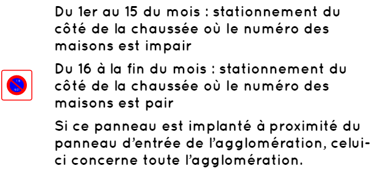

Définitions
● L’arrêt
L’arrêt est une immobilisation du véhicule de courte durée. Le conducteur doit rester à proximité de son véhicule pour le déplacer si besoin.
● Le stationnement
Le stationnement est une immobilisation du véhicule pouvant aller jusqu’à 7 jours. Au-delà de 7 jours consécutifs de stationnement, celui-ci est considéré comme abusif. Le véhicule peut alors être mis en fourrière
La signalisation d’interdiction d’arrêt ou de stationnement
● La signalisation verticale
Panneaux :

Panonceaux :
Les panneaux que l’on vient de voir ci-dessus peuvent être accompagnés d’un panonceau pour interdire/autoriser le stationnement et/ou l’arrêt à certains véhicules :
Certains panonceaux indiquent la zone d’effet d’un panneau :

● La signalisation horizontale
● Le stationnement payant
Un stationnement payant est indiqué par l’un des panneaux ci-dessous Pour stationner sur une de ces places il est obligatoire de payer, généralement en prenant un ticket à un horodateur.

● Le stationnement unilatéral à alternance semi-mensuelle
signifie que l’on peut stationner du côté d’une rue uniquement durant la moitié du mois. Ci-dessous, vous trouverez les panneaux qui annoncent un stationnement unilatéral à alternance semi-mensuelle ainsi que leur signification :
Les panneaux prennent effet entre 20h30 et 21h00 les jours concernés (soit le 15 du mois, soit le dernier jour du mois).
Les différents types de stationnements
● Stationnement en bataille
La voiture est garée perpendiculairement au trottoir.
● Stationnement en épi
La voiture est garée de biais par rapport au trottoir.
● Stationnement en créneau
La voiture est garée parallèlement au trottoir.
Où et comment s’arrêter et stationner
Il faut toujours s’arrêter ou stationner côté droit de la chaussée sur une chaussée à double sens.
Si la chaussée est en sens unique, on peut s’arrêter ou stationner indifféremment du côté droit
ou gauche de la chaussée.
En effet, il est interdit de s’arrêter côté gauche de la chaussée si celle-ci est à double sens
Il est interdit de s’arrêter (et donc de stationner) si l’arrêt est gênant, ou pire, dangereux.
Voici quelques exemples où l’arrêt est interdit :
Dans certaines situations, l’arrêt est toléré, mais le stationnement interdit. En effet, le conducteur doit à tout moment pouvoir déplacer son véhicule dans les situations suivantes :
Si le véhicule est arrêté sur la chaussée pour cause d’incident technique, utilisez les feux de détresse et placez le triangle de présignalisation. Exception : sur l’autoroute, il est interdit de placer le triangle de présignalisation, car trop dangereux.
Bon courage pour votre code !